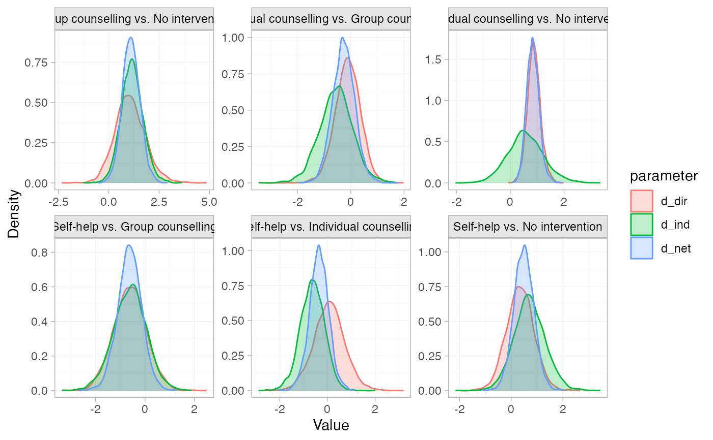

Summarise the results of node-splitting models
Source:R/nma_nodesplit-class.R
summary.nma_nodesplit_df.RdPosterior summaries of node-splitting models (nma_nodesplit and
nma_nodesplit_df objects) can be produced using the summary() method, and
plotted using the plot() method.
Usage
# S3 method for class 'nma_nodesplit_df'
summary(
object,
consistency = NULL,
...,
probs = c(0.025, 0.25, 0.5, 0.75, 0.975)
)
# S3 method for class 'nma_nodesplit'
summary(
object,
consistency = NULL,
...,
probs = c(0.025, 0.25, 0.5, 0.75, 0.975)
)
# S3 method for class 'nma_nodesplit'
plot(x, consistency = NULL, ...)
# S3 method for class 'nma_nodesplit_df'
plot(x, consistency = NULL, ...)Arguments
- consistency
Optional, a
stan_nmaobject for the corresponding fitted consistency model, to display the network estimates alongside the direct and indirect estimates. The fitted consistency model present in thenma_nodesplit_dfobject will be used if this is present (seeget_nodesplits()).- ...
Additional arguments passed on to other methods
- probs
Numeric vector of specifying quantiles of interest, default
c(0.025, 0.25, 0.5, 0.75, 0.975)- x, object
A
nma_nodesplitornma_nodesplit_dfobject
Value
A nodesplit_summary object
Details
The plot() method is a shortcut for plot(summary(nma_nodesplit)). For
details of plotting options, see plot.nodesplit_summary().
Examples
# \donttest{
# Run smoking node-splitting example if not already available
if (!exists("smk_fit_RE_nodesplit")) example("example_smk_nodesplit", run.donttest = TRUE)
# }
# \donttest{
# Summarise the node-splitting results
summary(smk_fit_RE_nodesplit)
#> Node-splitting models fitted for 6 comparisons.
#>
#> ------------------------------ Node-split Group counselling vs. No intervention ----
#>
#> mean sd 2.5% 25% 50% 75% 97.5% Bulk_ESS Tail_ESS Rhat
#> d_net 1.11 0.44 0.26 0.81 1.10 1.40 2.00 1743 2166 1
#> d_dir 1.06 0.76 -0.33 0.56 1.03 1.54 2.68 3785 2905 1
#> d_ind 1.15 0.55 0.11 0.79 1.14 1.50 2.26 1746 1811 1
#> omega -0.09 0.93 -1.86 -0.71 -0.12 0.51 1.79 2674 2542 1
#> tau 0.87 0.20 0.56 0.73 0.84 0.98 1.33 1007 1599 1
#> tau_consistency 0.84 0.18 0.56 0.71 0.81 0.95 1.27 1095 1647 1
#>
#> Residual deviance: 54 (on 50 data points)
#> pD: 44.2
#> DIC: 98.2
#>
#> Bayesian p-value: 0.9
#>
#> ------------------------- Node-split Individual counselling vs. No intervention ----
#>
#> mean sd 2.5% 25% 50% 75% 97.5% Bulk_ESS Tail_ESS Rhat
#> d_net 0.84 0.24 0.41 0.68 0.83 0.99 1.33 1083 1746 1.01
#> d_dir 0.88 0.25 0.40 0.72 0.87 1.04 1.40 1870 1924 1.00
#> d_ind 0.58 0.68 -0.72 0.14 0.55 1.00 2.00 1446 1973 1.00
#> omega 0.31 0.70 -1.11 -0.14 0.31 0.76 1.69 1436 2038 1.00
#> tau 0.86 0.20 0.55 0.72 0.83 0.97 1.30 1340 2197 1.00
#> tau_consistency 0.84 0.18 0.56 0.71 0.81 0.95 1.27 1095 1647 1.00
#>
#> Residual deviance: 54.3 (on 50 data points)
#> pD: 44.2
#> DIC: 98.5
#>
#> Bayesian p-value: 0.64
#>
#> -------------------------------------- Node-split Self-help vs. No intervention ----
#>
#> mean sd 2.5% 25% 50% 75% 97.5% Bulk_ESS Tail_ESS Rhat
#> d_net 0.49 0.39 -0.28 0.23 0.49 0.75 1.25 1805 2504 1
#> d_dir 0.34 0.54 -0.69 0.00 0.34 0.69 1.39 2465 2788 1
#> d_ind 0.71 0.62 -0.46 0.32 0.70 1.11 1.96 1694 2301 1
#> omega -0.37 0.82 -2.01 -0.89 -0.35 0.18 1.18 1784 2226 1
#> tau 0.87 0.20 0.56 0.73 0.84 0.98 1.32 1051 1317 1
#> tau_consistency 0.84 0.18 0.56 0.71 0.81 0.95 1.27 1095 1647 1
#>
#> Residual deviance: 54.2 (on 50 data points)
#> pD: 44.5
#> DIC: 98.7
#>
#> Bayesian p-value: 0.66
#>
#> ----------------------- Node-split Individual counselling vs. Group counselling ----
#>
#> mean sd 2.5% 25% 50% 75% 97.5% Bulk_ESS Tail_ESS Rhat
#> d_net -0.27 0.42 -1.08 -0.55 -0.27 0.00 0.55 2322 2465 1
#> d_dir -0.11 0.48 -1.07 -0.42 -0.11 0.21 0.79 3184 2831 1
#> d_ind -0.55 0.63 -1.83 -0.96 -0.54 -0.15 0.70 1304 1967 1
#> omega 0.44 0.70 -0.94 -0.01 0.42 0.89 1.81 1365 1712 1
#> tau 0.86 0.20 0.56 0.73 0.84 0.98 1.33 1239 1769 1
#> tau_consistency 0.84 0.18 0.56 0.71 0.81 0.95 1.27 1095 1647 1
#>
#> Residual deviance: 53.7 (on 50 data points)
#> pD: 44
#> DIC: 97.7
#>
#> Bayesian p-value: 0.51
#>
#> ------------------------------------ Node-split Self-help vs. Group counselling ----
#>
#> mean sd 2.5% 25% 50% 75% 97.5% Bulk_ESS Tail_ESS Rhat
#> d_net -0.62 0.49 -1.59 -0.94 -0.62 -0.30 0.34 2557 2690 1.00
#> d_dir -0.61 0.66 -1.91 -1.04 -0.60 -0.17 0.69 4162 3023 1.00
#> d_ind -0.61 0.67 -1.98 -1.05 -0.59 -0.17 0.71 2183 2432 1.00
#> omega 0.00 0.90 -1.71 -0.61 0.00 0.57 1.87 2477 2004 1.00
#> tau 0.87 0.20 0.56 0.73 0.85 0.98 1.32 1171 1933 1.01
#> tau_consistency 0.84 0.18 0.56 0.71 0.81 0.95 1.27 1095 1647 1.00
#>
#> Residual deviance: 54 (on 50 data points)
#> pD: 44.2
#> DIC: 98.2
#>
#> Bayesian p-value: 1
#>
#> ------------------------------- Node-split Self-help vs. Individual counselling ----
#>
#> mean sd 2.5% 25% 50% 75% 97.5% Bulk_ESS Tail_ESS Rhat
#> d_net -0.35 0.41 -1.18 -0.62 -0.35 -0.09 0.46 1993 2691 1
#> d_dir 0.07 0.66 -1.23 -0.36 0.07 0.48 1.38 3595 2923 1
#> d_ind -0.63 0.51 -1.69 -0.97 -0.63 -0.28 0.34 2028 2480 1
#> omega 0.70 0.82 -0.91 0.15 0.71 1.23 2.30 2429 2427 1
#> tau 0.86 0.19 0.56 0.72 0.83 0.97 1.29 1121 2011 1
#> tau_consistency 0.84 0.18 0.56 0.71 0.81 0.95 1.27 1095 1647 1
#>
#> Residual deviance: 54.1 (on 50 data points)
#> pD: 44.5
#> DIC: 98.6
#>
#> Bayesian p-value: 0.39
# Plot the node-splitting results
plot(smk_fit_RE_nodesplit)

# }